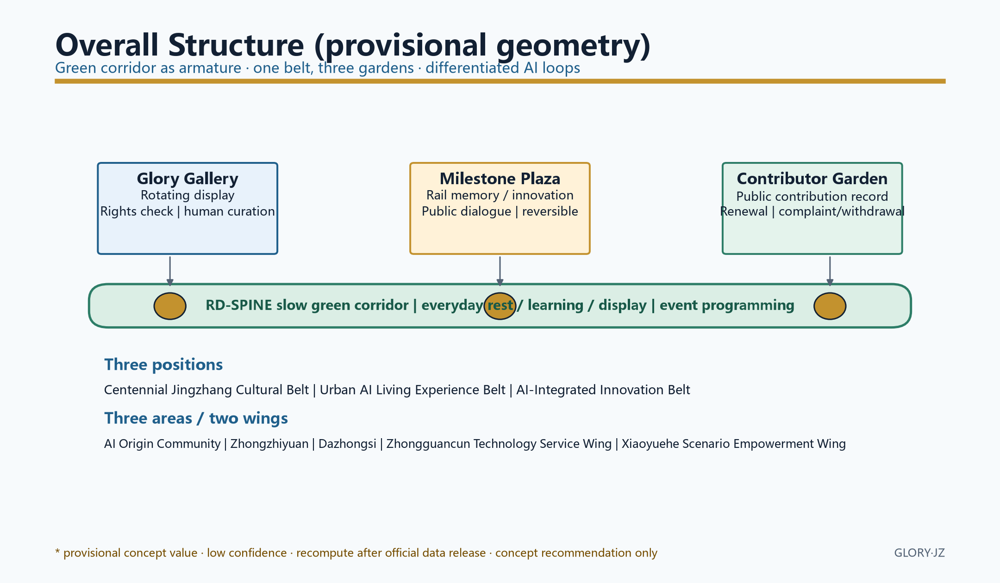
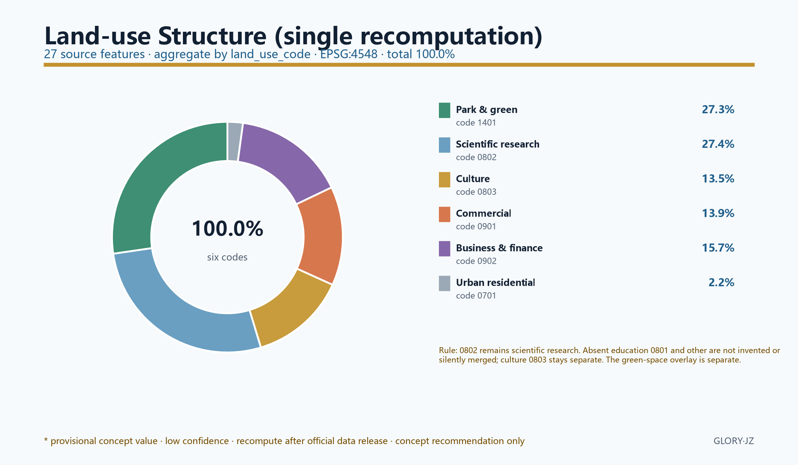
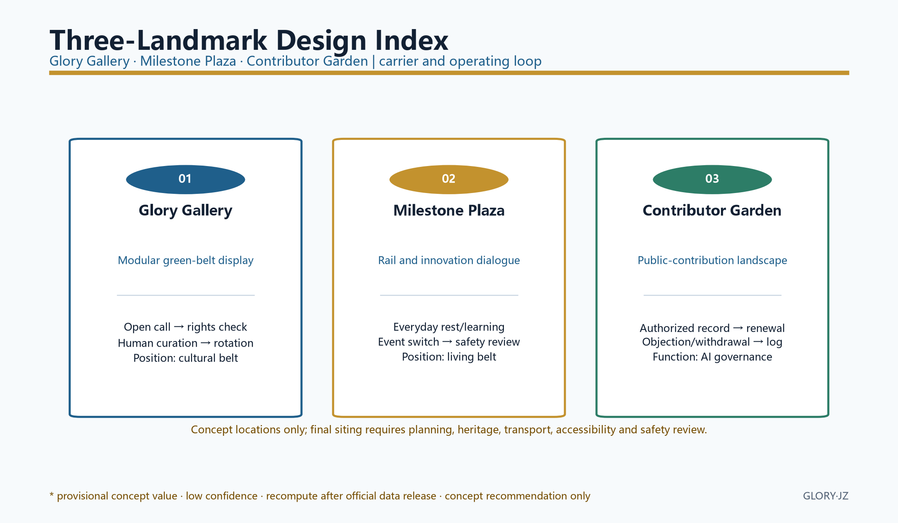
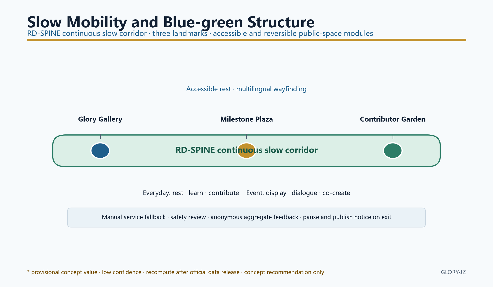
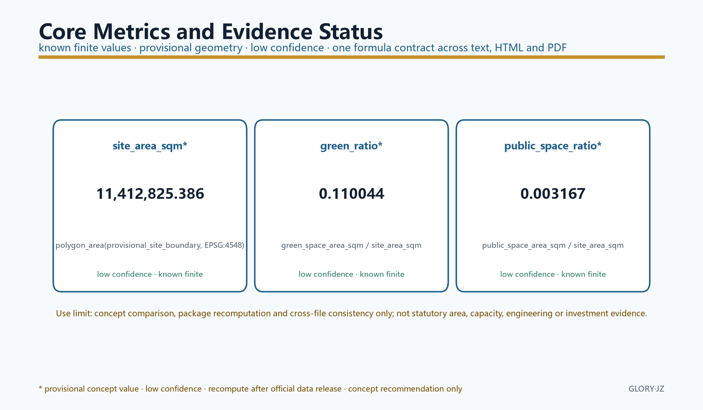

GLORY·JZ — The Honor Belt
Honor display system and public-space component library · “Where a century of rail meets a generation of AI.”
1. Basis, sources and data boundary
The package uses the disclosed public call, taskbook, public planning/design and governance references, and participant-created provisional geometry. Official GIS/CAD, red lines, heritage controls, statutory land-use controls, utility capacity, verified existing-condition inventories and real operational baselines are not available. sources.json, assumptions.json and risk.json record provenance and use limits. No enterprise, investor, policy allocation, official endorsement, personal data or built condition is asserted.
2. Three-level scope framework
A coordination study addresses belt and regional interfaces; overall urban design uses the green corridor as its armature; detailed concept design focuses on Glory Gallery, Milestone Plaza and Contributor Garden. All levels share one metric contract, one land-use aggregation rule and one evidence ledger.
3. Coordination study: industry and future city
GLORY·JZ is a public-memory interface between research, innovation, daily life and culture. A proposed service loop connects the AI Origin Community, Zhongzhiyuan, Dazhongsi, the Zhongguancun Technology Service Wing and the Xiaoyuehe Scenario Empowerment Wing. It does not promise招商, capital, output or institutional participation. Four global cases and five user groups are mechanisms and reference lenses only.
4. Overall design: renewal and urban design depth
“One belt, three gardens” links rotating honor display, milestone dialogue and public contribution records. Components are modular, reversible, reusable and removable. Normal-day rest, learning and conversation can switch to event-day display, subject to professional review. No FAR, height, red line, demolition, investment or capacity conclusion is made.


5. Detailed areas and public-space system
Glory Gallery is a modular rotating display corridor; Milestone Plaza stages a restrained dialogue between railway memory and contemporary innovation; Contributor Garden makes authorized public contribution visible through a renewable credited landscape. They are concept locations, not confirmed sites. Each component has a manual alternative and a public complaint/withdrawal route.


6. AI innovation, users and AI-plus scenes
Five scenes are retained: content curation and de-duplication, multilingual accessible interpretation, facility inspection support, anonymous participation sensing with route suggestions, and human content review. Users include students/researchers, innovation workers, residents/families, international visitors and open-source/public contributors. A steward, not an unreviewable model, makes the public-facing decision.
Three positions · five functions · three areas/two wings · response
| Taskbook item | Spatial carrier | Mechanism | Scene/metric and evidence |
|---|---|---|---|
| Centennial Jingzhang Cultural Belt | Green corridor and three landmarks | Rights check → human curation → rotation → objection/withdrawal | 3 landmarks; 3 programs; public_space.geojson |
| Urban AI Living Experience Belt | RD-SPINE, landmarks and scenario nodes | Normal/event switch, bilingual wayfinding, accessible rest and manual safety | 8 nodes; 5 personas; public_space_ratio* |
| AI-Integrated Innovation Belt | Zhongzhiyuan, Dazhongsi and two wings | Three differentiated loops with roles, human gates and exits | 3 loops; 3 tests; compliance_matrix.json |
| Full-stack AI Self-directed Innovation System | Zhongzhiyuan KEY-ZHON | Compute → data → model → evaluation → deployment → governance | Deployment gate and rollback |
| World-class AI Innovation Ecosystem | AI Origin Community + service wing | Open call, case library, knowledge and referral | 4 cases; no capital promise |
| AI-plus Scenario Empowerment Paradigm | Three gardens + Xiaoyuehe path | Opt-in input → explainable aid → human review → notice → withdrawal | 3 tests; 1 public path |
| Intelligent AI Vitality City | Slow corridor and reversible components | Rest/learning/display and event switch with manual fallback | green_ratio=0.110044* |
| Global Voice in AI Governance | Contributor Garden board and Zhongzhiyuan log | Public register, complaint, withdrawal, human gate and exit record | Five scenes with review/exit |
| AI Origin Community | KEY-BEIJ | Bilingual accessible learning and contribution interface | 5 personas; concept only |
| Zhongzhiyuan AI Self-directed Innovation Accelerator Area | KEY-ZHON | Reversible full-stack test protocol | Six-stage chain |
| Dazhongsi AI Industry Cluster | KEY-DAZH | Smart-native consumption/business: wayfinding, time window, service board | Operator and safety review |
| Zhongguancun Technology Service Wing | Regional service interface | Knowledge, technical support and rights-review referral | No organization or capital promise |
| Xiaoyuehe Scenario Empowerment Wing | RD-SPINE → nodes → three landmarks | Route choice → accessible experience → assistance → feedback → update | 1 path; 8 nodes; manual alternative |
District-differentiated AI architecture and scene matrix
| District/path | Space and subject | Input → output | Human review | Exit |
|---|---|---|---|---|
| Zhongzhiyuan | KEY-ZHON; data steward, model owner, evaluator, governance reviewer | Permitted model cards, anonymized aggregate requests, benchmarks → result card, evaluation log and deployment decision; compute → data → model → evaluation → deployment → governance | Use, quality, bias and governance review before deployment | Threshold failure, withdrawal, unresolved complaint or close: disable endpoint, roll back and archive/delete by record |
| Dazhongsi | KEY-DAZH; shop/office operator, visitor, district operations and safety reviewer | Opt-in anonymous request, public opening information, manual wayfinding observation → bilingual route card, time window or service board | Operator checks wording; operations checks safety/accessibility | Complaint, unsafe crowding, accessibility failure or stale input: return to manual notice |
| Xiaoyuehe | RD-SPINE → nodes → landmarks; residents, families, students, visitors, volunteers | Opt-in feedback, accessibility request, manual count and published route/event info → route card, rest/accessibility suggestion, dispersal note | Community liaison checks inclusion; safety lead checks route/event conflict; steward helps offline | Complaint threshold, route change or event close: pause route suggestion and log notice |
7. Land use, building scale and retain/renovate/demolish
The concept retains heritage/green memory, renovates compatible space where professionally justified and considers demolition only through a separate statutory safety review. The sole land-use source is geometry/land_use.geojson: 27 features, six present codes, EPSG:4548, divided by provisional boundary area 11,412,825.386 sqm.
| Code | Category | Features | Area sqm | Share |
|---|---|---|---|---|
| 1401 | Park and green space | 5 | 3,116,095.041 | 27.3% |
| 0802 | Scientific research | 4 | 3,125,404.414 | 27.4% |
| 0803 | Culture | 3 | 1,545,510.440 | 13.5% |
| 0901 | Commercial | 4 | 1,583,428.401 | 13.9% |
| 0902 | Business and finance | 6 | 1,796,422.322 | 15.7% |
| 0701 | Urban residential | 5 | 245,964.767 | 2.2% |
| Total | — | 27 | 11,412,825.386 | 100.0% |
0802 remains scientific research; absent education 0801 and absent other are not invented or silently merged; 0803 remains culture. The green_space.geojson overlay is separate from 1401.
8. Transport, rail, municipal and public services
Walking and cycling are prioritized. The continuous slow corridor is coordinated conceptually with rail and transfers on event days. Lighting, drainage, power, communications, toilets, rest points, first aid and family services are modular interfaces. Final routes, capacity and utilities require professional review; every AI suggestion has a manual alternative.
9. Blue-green space, public space and character
The three gardens form a public-space component library: display, dialogue and contribution. Railway memory is expressed through material, track rhythm, shadow and restrained signage. The route layer supports all ages, children, older people, visitors and people with disabilities. No protected status is claimed for a concept polygon.
10. Project list, implementation policy and phasing
Near term 1–3 years: reversible Glory Gallery test, rights ledger, manual service and one scenario loop. Middle term 3–5 years: connect the slow route and test Milestone Plaza and Contributor Garden. Long term 5–10 years: refine through evidence and public review. Honor Release Day, Open-source Contributor Appreciation Week and Community Co-creation Festival are proposed, not confirmed. Every stage has a baseline setup, threshold confirmation, human review, public notice and exit record.
11. Metrics, area recomputation and compliance

site_area_sqm=11,412,825.386 sqm*, formula polygon_area(provisional_site_boundary, EPSG:4548), low confidence; green_ratio=0.110044*, formula green_space_area_sqm/site_area_sqm, low; public_space_ratio=0.003167*, formula public_space_area_sqm/site_area_sqm, low. The asterisk means a known finite provisional value for package recomputation and comparison only, not statutory area, capacity, engineering or investment evidence. There is no real baseline or acceptance result; a professional team must agree thresholds before a pilot. Evidence for positions, functions, areas/wings, district loops and land use is in compliance_matrix.json.
12. Risk, copyright and compliance
Honor and contributor material requires permission, verification, objection, withdrawal and retention rules before identifiable display. The name and logo are concept assets; commercial use requires a separate rights/name review. AI uses anonymized aggregates only, human review for key decisions and no excessive monitoring. Heritage, transport, municipal, fire, accessibility, data protection and event-safety reviews are required before real-world testing.
13. References
References include the public call and taskbook, public planning/design guidance, land-use classification guidance, AI-governance guidance, accessibility reference and the package's provisional geometry. sources.json is the local provenance register. External cases are mechanisms only and do not imply local endorsement.